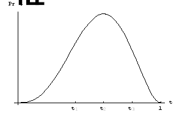
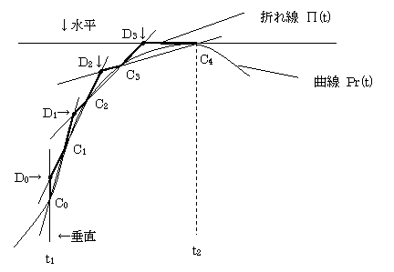

3-3-2-4-3マルコフ連鎖モンテカルロ法による民族学的差の解析について
1. 全体像
（1） 扱うパラメタは以下のとおり。
① 既知パラメタ
a) 個人別・遺伝マーカー別genotype
② 未知(推定)パラメタ
a) クラスタ数
b) クラスタ別・遺伝マーカー別頻度
c) 個人別所属クラスタ
（2） 解決しようとしているのは
① 既知パラメタから、未知パラメタの期待値(その他信頼区間など)を求める。
（3） 上記の問題は以下のような理由により、算術的に得られないことがしばしばである。
① 複雑な積分を用いる必要がある。
② 高次元の解である。
③ そもそも解析解が得られえない分布である。
（4） したがって、算術的方法以外の解法が必要である。
2. 算術的方法以外の方法として採用される「マルコフ連鎖モンテカルロ法(MCMC)」の概説
（1） モンテカルロ法とマルコフ連鎖を組み合わせた推定法のことである。集団の遺伝的構造解析のように、多数の未知パラメタの推定をおこなう場合には、MCMC法を実践するにあたって、さらに工夫が必要で、Metropolis-Hastings(M-H)アルゴリズムを用いて定常分布(推定解)に近づく必要があり、さらに、M-Hアルゴリズムの実行時に使用する関数(分布)には、Gibbsサンプラと呼ばれる条件付き分布(関数)を用いるのが通例となっている。このGibbsサンプラからの乱数発生にはAdaptive
Rejection samplingという方法を併用する必要がある。
（2） モンテカルロ法とは
① 統計学の実験的手法の１つである。乱数を発生させてシミュレーションを行い、確率的に解を得る方法である。適切な解を得るためには、乱数の発生に条件を設定する必要がある。その条件設定方法の一つがマルコフ連鎖である。
（3） マルコフ連鎖とは
① ある変数を順次、発生させるときに、現世代のパラメタの値(のセット)のみをもとに次世代のパラメタの値を発生させる方法のことである。
（4） Metropolis-Hastingsアルゴリズムとは
① マルコフ連鎖を用いて、世代を順次進めていくときに、次世代のパラメタの値を得るためには、次世代のパラメタ値をある分布(関数)(サンプラと呼ぶ)から作り出し、その作られた値を次世代のパラメタの値として妥当かどうかを判断する、という手続きを踏むと未知パラメタの値(のセット)が定常状態(推定値)に向かうことが知られている。このような新世代のパラメタ値の作り方をM-Hアルゴリズムと呼ぶ。
（5） Gibbsサンプラとは
① M-Hアルゴリズムを実行する(現世代パラメタ値(のセット)から次世代のパラメタ値(のセット)を得る)ときに用いるサンプラ(分布(関数))のタイプの一つである。このサンプラの特徴は、
「複数のパラメタがあり、その個々のパラメタを推定するときに、自身を除くその他の既知・未知パラメタの現時点での値によって推定することができる、言い換えれば、その推定作業には現時点の自身の値は影響を与えない」
というものである。このような分布のことを「フル条件付き分布」という。このような条件は、個々のパラメタの新世代の値を１つ１つ作ればよいのでアルゴリズムとして簡単である。しかしながら、アルゴリズムとして簡単であるがゆえに、乱数の発生が困難であることが多く、次のAdaptive Rejection samplingを導入することが必要である。
（6） Adaptive Rejection samplingとは
① フル条件付き分布から直接乱数を発生させることは容易ではないので(複雑な積分計算を伴うことが多いため)、乱数を発生させることが容易な代理の分布を作成し、その2分布の関係を用いて乱数を発生させるという方法である。
3. SNPを用いたMCMC法による遺伝的構造解析の実際
（1） パラメタ
① 既知パラメタ
a) 個人別・遺伝マーカー別genotype X
l
Xは要素数＝(人数)×(SNP数)の行列である
② 未知パラメタ
a) クラスタ数（固定し、クラスタ数別にシミュレーションする）
b) クラスタ別・遺伝マーカー別頻度 P
l
Pは要素数＝(クラスタ数)×(ＳＮＰ数)の行列である
c) 個人別所属クラスタ Z
l
Zは要素数＝(人数)の1次元行列である
（2） 推定の流れ
① Ｚの初期値設定(以下の２方法で行える) Z0
② 以下、マルコフ連鎖による推定の繰り返し(m=1,2,3,…は繰り返し回数)
a) X及びＺm-1より、Pmを推定する
b) X及びPmよりZmを推定する
③ Zの初期設定の影響がなくなった後の推定Pm、Zmの分布が得られる。これがある観測データXが与えられたときのP及びZの推定値の分布である
（3） 推定の各段階の詳細
① Ｚの初期値設定(以下の２方法で行える) Z0
a) ランダムに設定(指定クラスタに均等な確率で割り当て)
b) サンプリング地域などにより個人別に特定
② マルコフ連鎖
a) X及びＺm-1より、Pmを推定する
l
クラスタc・SNP s のアレル頻度がt(0≦t≦1)の確率分布Pr(t)は
Pr(t)=tn1x(1-t)n2/(Constant)
で与えられる。但しConstant = を満たす。
これはβ分布であり、Dirichlet分布の要素が２の場合に補正係数を(1,1)とした場合(Uniform
distributionを仮定している)である。つまり、Prichardらのプログラム “structure”と同様の設定となっている。
l
クラスタ別・SNP別にアレルの本数を数える。
l
アレル１の本数をn1、アレル２の本数をn2とすると
n1=n2=0の場合と
n1=1 またはn2=1の場合は
分布Pr(t)から直接乱数が発生できるので、その値をpの次世代の値として採用する
それ以外の場合は
Adaptive Rejection samplingを行ってpの次世代の値を得る
このとき必要な
Π(t)≧Pr(t)を常に満たすような分布Π(t)は以下のようにして作成する。
<Π(t)の作成>
Pr(t)は下図のように描かれて、それは1次導関数、2次導関数の正負によって４区分に分けられる。

区分1：0−t1は下に凸の増加関数
区分2：t1−t2は上に凸の増加関数
区分3：t2−t3は上に凸の減少関数
区分4：t3−t4は下に凸の減少関数
例図はn1=3, n2=2の場合である。
但し、
区分１と区分４とは下に凸なので、任意の点を結んだ直線がΠ(t)として採用できる。
一方、区分２と区分３とは、上に凸なので、Pr(t)上の2点(C0,C1…)を結ぶ直線は必ずPr(t)そのものよりも小さい値をとる。したがって下図で→で指し示したように、Pr(t)上の隣り合う2点同士を結ぶ直線の交点として得られる点(D0,D1…)
をΠ(t)の点として採用し、これと、Pr(t)上の点(C0,C1…)とを交互に結んだ折れ線をΠ(t)とする。

このようにして作成されたΠ(t)を用いて、乱数を発生させる。
Π(t)は有限個の点を結んだ折れ線なので、その積分は容易であり、したがって、このΠ(t)に比例する確率密度関数からは、乱数を発生させることは容易である。
今、Π(t)から発生させた乱数をｒとする。
これとは別に[0-1]の一様乱数qを発生させ、
q<Π(r)/Pr(r)
を満たした場合のみrを採用すると
rはPr(t)に比例する確率密度関数から発生させた乱数に一致する.
この採用された乱数がpの次世代の値である。
もし、
q<Π(r)/Pr(r)
が満たされなまった場合には、Π(t)の再作成をして、乱数を発生しなおす。そのときに、Pr(t)上の点(t,Pr(t))を新たに加えて、より細かい折れ線Π(t)を作成する。この新しいΠ(t)は必ず、それよりも前の段階のΠ(t)よりもPr(t)に近く、乱数が採用される確率は高くなる。
b) X及びPmよりZmを推定する
l
個人iのgenotype dataから1,…ncのそれぞれのクラスタの事後確率を求め、その比率に応じて、iの出身クラスタを推定する。
l
前の段階において、クラスタ別・SNP別のアレル頻度は得られているからそれをp(c,s)と表すと、個人iがクラスタcの出身である尤度Pr(i from c)は
とする。
ただし、g(c,s)はクラスタ別・SNP別のgenotype頻度であり、
個人iのSNP sのgenotypeがアレル1のホモの場合は
g(c,s) = p(c,s)2
genotypeがヘテロの場合は
g(c,s) = 2 x p(c,s)
x (1 - p(c,s))
genotypeがアレル２のホモの場合は
g(c,s)=(1-p(c,s))2
で与えられる。
上記アルゴリズムを実行する上での詳細は、プログラムソース内の説明文を参照のこと。
カウンタ